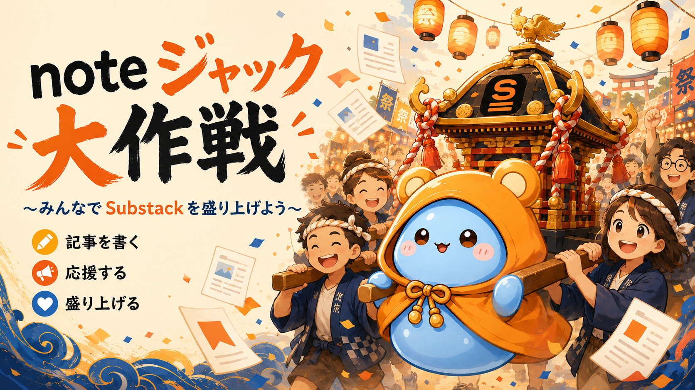

私がサブスタを使う理由
居心地の良さ、書きやすさ、読者との距離感。あなたがサブスタにいる理由を熱く語るコースです。

【初日で20投稿突破！】最初の10人募集から始まった神輿が、想像以上に大きくなっています。10人以上集まった場合も、参加してくれた人たちは特設ページでちゃんと紹介します。楽しそうだと思ったら、ぜひこの祭りに参加してください。
Why
サブスタの国内流入はまだ大きくありません。少ないパイを囲い込むだけでは、発見される人も、届く物語も、どうしても限られてしまいます。
この作戦は、インフルエンサー偏重の波に寄りかかるのではなく、noteの外側と内側へ「サブスタおもろいよね！」という声を届けていくための連動企画です。
ひとりの力は小さくても、みんなで同じタイミングに同じ神輿を担げば、それは大きな「祭り」になります。
Operation
共通ハッシュタグ
#サブスタ盛り上げ隊
投稿するときは、このタグをつけて同じ神輿に集まります。
1st Event Week
この1週間、みんなで1投稿でもいいから「サブスタ愛」をnoteに書いてみる。サブスタを使う理由、好きな記事、noteとの使い分け。小さな声を同じ時期に重ねて、「サブスタおもろいよね！」を外へ届けるお祭りです。初日だけで20本以上の記事が集まりました。あと5日あるなら、どうせなら100投稿を目指してみてもいいかもしれません。第一回をきっかけに、次回へつながる継続企画として育てていきます。
Members
祭りに参加している書き手と、それぞれのSubstackをまとめて見られる名鑑ページです。第一回では、期間の中間にあたる2026年6月17日（水）に公開します。10人を超えて集まった場合も、参加者は順次ここで紹介していきます。
Join
居心地の良さ、書きやすさ、読者との距離感。あなたがサブスタにいる理由を熱く語るコースです。
推しサブスタ、忘れられない記事、読んでほしい書き手を紹介するコースです。
2つの場所をどう冒険しているか。クリエイター視点で使い分けや発見を書くコースです。
Title Ideas
そのまま使っても、少し変えてもOKです。迷ったら、この中から近いものを選んで書き始めてください。
Library
#サブスタ盛り上げ隊 に投稿された記事を、順次ここにストックしていきます。初日だけで20本以上の記事が集まりました。現在、リンクを整理中です。
公開後は、A/B/Cのコース別にあとから読めるライブラリとして更新していきます。
参加記事リンクを整理中です
水曜の特設ページ公開にあわせて、投稿記事をコース別に追加していきます。
After Posting
note記事に「#サブスタ盛り上げ隊」をつけて投稿します。A/B/CのどのコースでもOKです。
投稿後は、もちスラに記事URLを共有してください。ハッシュタグでも拾いつつ、見落とし防止に使います。
参加記事ライブラリと参加者紹介ページへ順次掲載します。読む人・応援する人の入口にもなります。
Voices
「これをきっかけに、初めてnoteを書きました」
「noteを放置していたけど、また書いてみます」
「サブスタの好きなところを、ちゃんと言葉にしたくなりました」
文章がうまいかどうかよりも、Substackのどこが好きか、なぜ続けたいと思ったか、どんな空気が心地いいのかを書いてほしいです。その「好き」が、これから始める人や、もう一度書こうとしている人の活力になります。
FAQ
もちろん参加できます。この企画は影響力の大きさを競うものではなく、それぞれの「サブスタ愛」を同じ時期に重ねて届けるお祭りです。フォロワー数に関係なく、1投稿から歓迎します。
大丈夫です。始めたばかりだからこそ感じる新鮮な発見や、noteとの違いも立派な記事テーマになります。
1本で十分です。余力があれば複数本でもOKですが、まずは無理なく1投稿で神輿を担ぐくらいの気持ちで参加してください。
note記事に「#サブスタ盛り上げ隊」をつけて投稿してください。参加記事はコース別にライブラリへストックし、参加者紹介ページでも順次紹介していきます。
もちろんできます。参加記事を読んで、スキを押したり、コメントを書いたり、面白い記事を紹介してくれることが一番の応援になります。書く人も、読む人も、盛り上げ隊の大事な一員です。